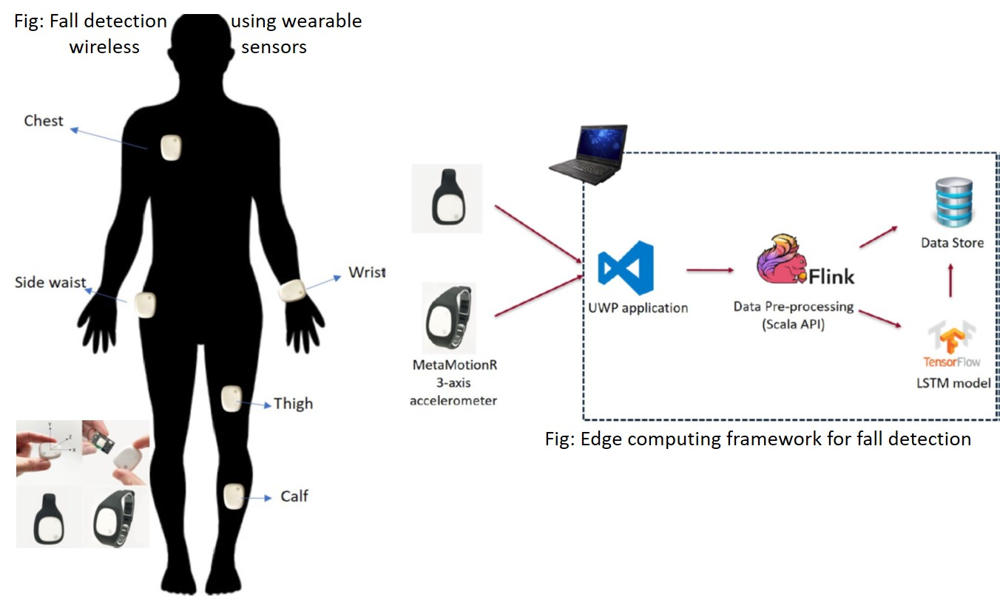

BAM Lab Projects
In BAM Lab we work on projects focusing on advanced machine cognition from streaming and non-streaming big data (text, video, images, sensor, multimodal), knowledge management and provisioning cloud based information and knowledge services. We present our ongoing and past project work below under three sections: data analytics, cognitive computing and big data and cloud infrastructure. Many of our projects fall under more than one of these three areas. We develop solutions for real life problems by collaborating with our industry partners using advanced artificial intelligence, machine learning, big data processing, cloud data management and service provisioning techniques.
Ongoing Projects
| Funding | Period | Topic |
|---|---|---|
| Pfizer Canada, Mitacs | Sep 2021-May 2022 | Prevalence of Moderate-to-severe Osteoarthritis pain of the hip and knee in Canadian Primary Care: A proof of concept study from the Canadian Primary Care Sentinel Surveillance Network |
| YouDoctorsOnline, Mitacs | Aug 2020-Apr 2021 | An online natural language chat text summarization framework for cloud-based medical service provisioning |
| Markitech, Mitacs | Aug 2020-Apr 2021 | A computer vision based remote Photoplethysmography (rPPG) technique for measuring biometric data from smart phone videos. |
| CUTRIC, Mitacs | Sep 2019-Aug 2022 | Leveraging Vehicle-to-Vehicle (V2V) and Vehicle-to-Infrastructure (V2I) data transfer using deep learning for pattern extraction and knowledge representation techniques for autonmous vehicles and smart city paradigms. |
| CIMVHR, IBM, Mitacs | Sep 2018-Aug 2021 | Using Advanced Analytics to Understand the symptoms and care services of Post Traumatic Stress Disorder (PTSD) for military and veteran population in a primary care setting. |
| IBM | Jan 2018-Dec 2020 | An intelligent data profiling approach to streaming sensor data analytics, management and querying. |
| NSERC CRD - IBM | May 2020-Apr 2023 | Multimodal streaming data analytics and management for advanced machine intelligence. |
| NSERC Discovery | Sep 2017-Aug 2022 | A smart data analytics and management framework. |
Data Analytics
Medical Data Analytics and Decision Support for Disease Diagnosis
Research on Electronic Medical Records (EMR) and the data stored in the CPCSSN (Canadian Primary Care Sentinel Services Network) data bank. CPCSSN store currently holds 1.6 million patient data shared by primary care physicians from many provinces and territories across Canada and serves as a valuable source of anonymized health data.
Diagnosing Hypertension: Developed a neural network model to predict hypertension from structured medical data from patients' health records. We obtained about 82% accuracy. [Lafreniere et al., 2016]
Diagnosing chronic low back pain: Created a tool for extracting knowledge from doctors chart notes for diagnosing chronic low backpain [Judd et al, 2018]. The tool implements a data analytic pipeline using a 3rd party script for anonymizing medical text data, CTAKES for extracting medical terms, and ensemble learning using a variety of machine learning models for disease diagnosis.
Discovering and diagnosing PTSD (post traumatic stress disorder) from doctors' chart notes: This is a collaborative project among University of Manitoba, Western University and and Queen's University funded by IBM, Mitacs, and CIMVHR. Goals are to develop a gold standard of the epidemiology of PTSD and applying NLP and text mining techniques to identify cases of PTSD in the Electronic Medical Records (EMR) of military veterans and their family members, compute statistics on care quality, prevalence and severity of PTSD in the population, and predict suicidal tendencies.
Stock Market Prediction
The three component Proposed Hybrid Model (PHM) [Wang et al., 2012] was implemented to predict daily stock index. Although PHM performed well for weekly stock prices, the results showed that the back propagation neural network (BPNN) model performed better than the other two component models of ARIMA (Auto Regressive Integrated Moving Average) and the ESM (Exponential Smoothing Model).

NLP and Text Analytics
Query Expansion for Knowledge Extraction: With industry partner Gnowit, developed a query expansion algorithm for expanding query terms to effectively search for matching webpages from large online web documents using DataMuse API and word2vec techniques.
Clustering Large Text Data: Implement text analytics algorithms (particle swarm optimization), SPARK-PSO, on big data analytics platforms such as Apache Spark for fast in-memory distributed analytics of large text data [Sherar et al, 2017].
CAPRI: Extracts frequent, infrequent and rare patterns and association rules from semi-structured mainframe log data files containing complex and hybrid line patterns [Zulkernine et al., 2012].
Topic Modeling: Implement various LSA, LDA, pLSA, and deep belief network [Chanderdhar Sharma and Marwa Chermiti] for the 20-Newsgroup dataset to extract topics and a neural network model to classify the text data based on the topics.
Cognitive Computing
Measuring Biometric Data from Mobile Phone Video
In collaboration with Markitech and YourDoctorsOnline and with Mitacs funding, BAM lab researchers developed a remote video based biometric data measurement system (incorporated in the Veyetals product) which uses smart phone video to measure heart rate, heart rate variability, oxygen saturation, stress level, blood pressure, and a separate contactless sensor to measure body temperature.
Chat Analysis and Summarization
Chats offer challenges as these are often short responses, may not be a complete sentence, can have a lot of noise (because of machine voice to text translation or typing error), and have domain specific terminology and phrases that are used in general conversations. Our work on chat summarization focuses on medical chats between real patients and real doctors over a medical advising platform to summarize the past chats to assist the doctors with providing an informed medical advice.
Hierarchical Classification of Images for Online Shopping Market
In collaboration with a startup company, BAM lab researcher (undergraduate) developed an efficient hierarchical image classification algorithm to categorize clothing using camera for online shopping market.
Identifying Reportable Diseases for Ministry of Health and Long Term Care
Created a cognitive data analytic and decision support pipeline for classifying noisy medical data based on schema and ministry specified guidelines using both a rule based and a neural network approach to identify reportable critical diseases [Lucas Rychlo].
A voice-controlled e-commerce application using IBM Watson
Reviewed state-of-the-art speech recognition systems, proposed a taxonomy and developed a speech enabled e-commerce website to increase accessibility of such websites using IBM Watson speech-to-text API and cloud services [Kandhari et al., 2018].
Autonomous Cars
Our CUTRIC funded project focuses on extracting key features from vehicular data for efficient V2V and V2I communication.
In an exploratory study, undergraduate students (Daisy Barrette and Alex Weatherhead) constructed two different versions of autonomous cars, one using ultrasonic sensors and deep learning models, and another using camera and deep convolutional networks, where the cars were trained to autonomously drive by sensing track boundaries. The model cars were made using raspberry pi with bluetooth connections, arduino uno and commercially available cheap sensors.
Autonomous Car Tracking
Used evolutionary computing with feed forward neural network to train a vehicle to successfully navigate a track in the shortest time possible [Song et al., 2017]. The fitness criteria included successful completion of the track without hitting any walls at maximum speed.
Vehicle Detection using Computer Vision
In this project, we implemented two different deep learning models based on YOLO series algorithms and compared their performances in detecting vehicles such as cars and trucks for self-driving cars to ensure road safety. In detecting the vehicles within 50 meters, the two variations of our models, YOLO and YOLOv3, achieved 93.75% and 96.88% mean recall, and 82.50% and 97.92% F1-measure on a two-way road with a detection speed of 19 fps and 74 fps respectively.
Computer Vision
Video Object Tracking: Leveraged the YOLOv2 architecture with a 2-D recurrent LSTM to implement a predictive video object detector and tracker (POD) [Gasmallah et al, 2018]. Another project focused on detection and measurement of sphroids, a model for cancer cell study.


Wearable Sensors and IoT
Fall Detection using Wearable Sensors: A deep learning model was implemented and trained offline using the public MobiAct dataset and later deployed in a streaming IoT data analytics framework for fall detection using MbientLab sensor MetaMotion R [Ajerla et al., 2018].
Big Data and Cloud Infrastructure
Streaming Data Analytics
A Multilevel Streaming Data Analytics Infrastructure: Design and implement a multi-level architecture for high speed real time streaming data analytics using streaming data ingesting and processing engines, and an integrated in-memory data storage and analytics framework. Goal: Enable complex machine learning without choking the streaming data processing pipeline. Funded by IBM and SOSCIP (Southern Ontario Smart Computing Innovation Platform), industry partner Gnowit.
Big Data Management
BINARY: Created a framework, BiNARY (A Big Data Integration framework for Adhoc Query Processing) for distributed management of multiple hybrid back-end data sources, and integration and ad-hoc querying of big data [Eftekhari et al., 2016]
Graph Data Management and Analytics: Multi-cluster large graph data management and analytics for online analytical processing to respond to user queries, link distributed data and real time community detection for distributed data management.
Cloud and Service Oriented Architectures
CLAaaS: Designed and implemented a Cloud-based Analytics-as-a-Service architecture to provide role-based access to users to a cloud-based data analytics and visualization platform to perform data upload, custom workflow definition and execution, knowledge sharing and visualization without worrying about installing required tools and storage platforms. [Zulkernine at al., 2013]